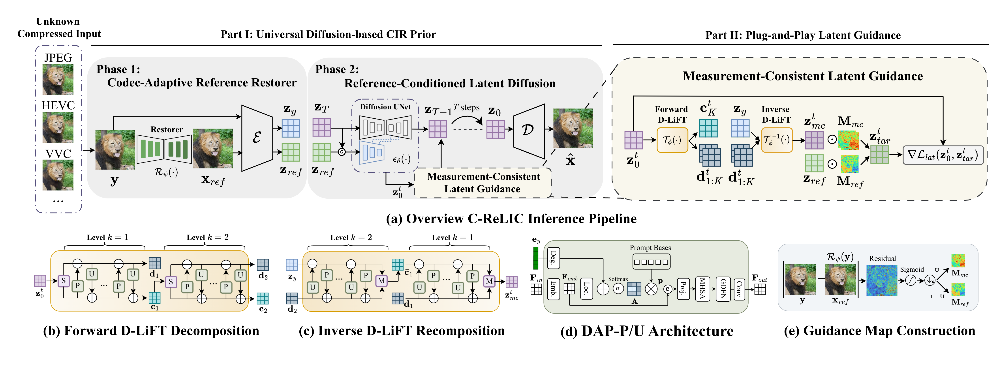

C-ReLIC: Lifting-Inspired Latent Diffusion for Universal Compressed Image Restoration
Imperial College London
Abstract
Compressed image restoration (CIR) aims to recover high-quality images from lossy compressed inputs. While methods based on latent diffusion models (LDMs) achieve strong perceptual restoration under specific settings, extending them to universal CIR remains challenging: task-specific conditional models require costly retraining for new compression settings, and most plug-and-play (PnP) solvers struggle to handle diverse modern codecs. To address these limitations, we propose C-ReLIC (Compressed image Restoration with Latent Invertible Consistency), a unified diffusion-based framework for universal CIR that generalizes across compression settings without explicit codec labels. C-ReLIC builds an LDM-based restoration prior and introduces measurement-consistent latent guidance (MCLG) to guide the reverse diffusion trajectory. MCLG uses a degradation-aware latent lifting transform (D-LiFT) operator to disentangle and recombine measurement- and detail-related information in VAE latent space, with a reference-observation uncertainty map for spatially adaptive fidelity-perception control. Extensive experiments show that C-ReLIC achieves state-of-the-art performance across diverse codecs, and flexibly improves existing LDM-based CIR pipelines as a PnP module.
Overview

Overview of the proposed C-ReLIC framework. (a) The inference pipeline combines a universal diffusion prior (Part I) with PnP measurement-consistent latent guidance (Part II). (b-c) Within MCLG, the forward D-LiFT operator decomposes the predicted latent $\mathbf{z}_0^t$ into an observation component $\mathbf{c}_K^t$ and multi-level details $\mathbf{d}_{1:K}^t$ (illustrated with a 2-level cascade). The inverse path recomposes a measurement-consistent latent $\mathbf{z}_{\mathrm{mc}}^t$ by replacing the observation component with the compressed latent $\mathbf{z}_y$. (d) DAP-P/U enables degradation-aware feature adaptation within D-LiFT. (e) Pre-computed residual maps ($\mathbf{M}_{\mathrm{mc}}$, $\mathbf{M}_{\mathrm{ref}}$) spatially fuse $\mathbf{z}_{\mathrm{mc}}^t$ and $\mathbf{z}_{\mathrm{ref}}$ into the final guidance target $\mathbf{z}_{\mathrm{tar}}^t$.
Additional Results
Additional visual reconstructions of C-ReLIC across different codecs are available here .